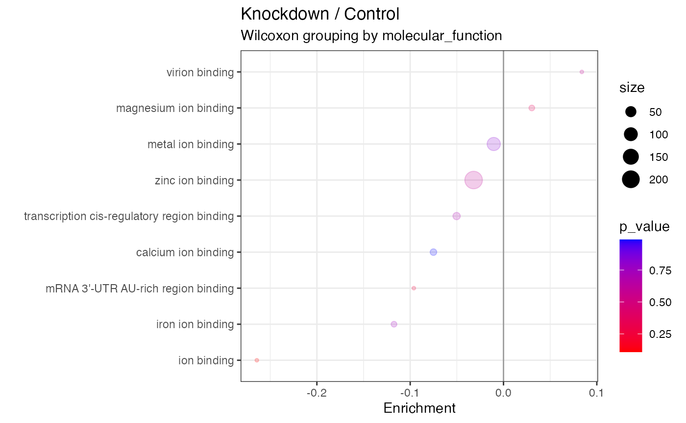

Annotating
annotating.RmdAnnotating data
As a part of the Tidyproteomics workflow, we need to update the
gene_name and description annotated terms in
the data imported from FragPipe. To accomplish this, we will use
information from a parsed FASTA file. The parsed FASTA file should
contain three columns: protein identifier,
term, and annotation.
Updating the gene_name and description
annotated terms will allow for easier interpretation and analysis of the
data. The gene_name and description attributes
provide crucial information about the protein, such as its function and
biological role. By updating these attributes with information from the
FASTA file, we can ensure that our data is accurate and informative.
The process of updating the gene_name and
description annotated terms is simple. First, we will parse
the FASTA file to extract the necessary information. Then, we will use
this information to update the corresponding attributes in the imported
data from FragPipe.
It is important to note that the parsed FASTA file must contain
accurate and up-to-date information. If the information in the FASTA
file is outdated or incorrect, the updated gene_name and
description attributes will also be incorrect. Therefore,
it is essential to verify the accuracy of the FASTA file before using it
to update the imported data from FragPipe.
library(tidyverse)
library(tidyproteomics)
# download the data
url <- "https://ftp.ebi.ac.uk/pride-archive/2016/06/PXD004163/Yan_miR_Protein_table.flatprottable.txt"
download.file(url, destfile = "./data/combined_protein.tsv", method = "auto")
# import the data
data_prot <- "./data/combined_protein.tsv" %>% import('FragPipe', 'proteins')From a FASTA File
Read in a FASTA file using some “un-exposed” methods in the
tidyproteomics package.
data_fasta <- "~/Local/data/fasta/uniprot_human-20398_20220920.fasta" %>%
tidyproteomics:::fasta_parse(as = "data.frame") %>%
select(protein = accession, gene_name, description) %>%
pivot_longer(
cols = c('gene_name', 'description'),
names_to = 'term',
values_to = 'annotation'
)
data_fasta %>% filter(protein %in% c('P68431', 'P62805'))
#> # A tibble: 4 × 3
#> protein term annotation
#> <chr> <chr> <chr>
#> 1 P62805 gene_name H4-16
#> 2 P62805 description Histone H4
#> 3 P68431 gene_name H3C12
#> 4 P68431 description Histone H3.1Notice the gene_name annotations are different from the
FASTA than from the FragPipe outoput.
data_prot$annotations %>% filter(protein %in% c('P68431', 'P62805'))
#> # A tibble: 4 × 3
#> protein term annotation
#> <chr> <chr> <chr>
#> 1 P62805 gene_name H4C1
#> 2 P62805 description Histone H4
#> 3 P68431 gene_name H3C1
#> 4 P68431 description Histone H3.1We can merge the annotations,
data_new_merged <- data_prot %>% annotate(data_fasta, duplicates = 'merge')
data_new_merged$annotations %>% filter(protein %in% c('P68431', 'P62805'))
#> # A tibble: 4 × 3
#> protein term annotation
#> <chr> <chr> <chr>
#> 1 P62805 description Histone H4
#> 2 P62805 gene_name H4C1; H4-16
#> 3 P68431 description Histone H3.1
#> 4 P68431 gene_name H3C1; H3C12Or we can replace the annotations,
data_new_replaced <- data_prot %>% annotate(data_fasta, duplicates = 'replace')
data_new_replaced$annotations %>% filter(protein %in% c('P68431', 'P62805'))
#> # A tibble: 4 × 3
#> protein term annotation
#> <chr> <chr> <chr>
#> 1 P62805 description Histone H4
#> 2 P62805 gene_name H4-16
#> 3 P68431 description Histone H3.1
#> 4 P68431 gene_name H3C12GO Annotations
To obtain GO annotations, you can visit UniProt’s website and search for the proteins of interest, such as human proteins. Once you have found the proteins, you will need to select the “Customize columns” option to access several options, including Gene Ontology.
After selecting Gene Ontology, you will need to choose the desired values, such as molecular function, by clicking on them. Once you have selected your desired values, click on the “Save” button to save your changes.
Finally, you can download the table as a TSV file by clicking on the “Download” button. This file will contain all the information you need about your selected proteins, making it easier to analyze and interpret the data.
Now that you know how to obtain GO annotations, you can use this information to enhance your research and analysis. UniProt’s website is a valuable resource for obtaining information about proteins, and the ability to customize columns and select desired values makes it even more useful for researchers and scientists.
Read in the TSV file from the downloaded UniProt table.
data_go <- "~/Local/data/uniprotkb_human_AND_reviewed_true_AND_m_2023_10_10.tsv" %>% read_tsv()
head(data_go)
#> # A tibble: 6 × 8
#> Entry Reviewed `Entry Name` `Protein names` `Gene Names` Organism Length
#> <chr> <chr> <chr> <chr> <chr> <chr> <dbl>
#> 1 A0A087X1C5 reviewed CP2D7_HUMAN Putative cytoch… CYP2D7 Homo sa… 515
#> 2 A0A0B4J2F0 reviewed PIOS1_HUMAN Protein PIGBOS1… PIGBOS1 Homo sa… 54
#> 3 A0A0B4J2F2 reviewed SIK1B_HUMAN Putative serine… SIK1B Homo sa… 783
#> 4 A0A0C5B5G6 reviewed MOTSC_HUMAN Mitochondrial-d… MT-RNR1 Homo sa… 16
#> 5 A0A0K2S4Q6 reviewed CD3CH_HUMAN Protein CD300H … CD300H Homo sa… 201
#> 6 A0A0U1RRE5 reviewed NBDY_HUMAN Negative regula… NBDY LINC01… Homo sa… 68
#> # ℹ 1 more variable: `Gene Ontology (molecular function)` <chr>We just need to tidy up that data a bit and get it into the format needed for attaching the annotations.
data_go <- data_go %>%
select(protein = Entry,
molecular_function = `Gene Ontology (molecular function)`) %>%
# separate the GO terms so we get 1/row
separate_rows(molecular_function, sep="\\;\\s") %>%
# remove the [GO:accession]
mutate(molecular_function = sub("\\s\\[.+", "", molecular_function)) %>%
# pivot to the needed format
pivot_longer(molecular_function,
names_to = 'term',
values_to = 'annotation')
head(data_go)
#> # A tibble: 6 × 3
#> protein term annotation
#> <chr> <chr> <chr>
#> 1 A0A087X1C5 molecular_function aromatase activity
#> 2 A0A087X1C5 molecular_function heme binding
#> 3 A0A087X1C5 molecular_function iron ion binding
#> 4 A0A087X1C5 molecular_function oxidoreductase activity, acting on paired donor…
#> 5 A0A0B4J2F0 molecular_function NA
#> 6 A0A0B4J2F2 molecular_function ATP bindingLooks great!
data_new_go <- data_prot %>% annotate(data_go)
data_new_go$annotations %>% filter(protein %in% c('P68431', 'P62805'))
#> # A tibble: 6 × 3
#> protein term annotation
#> <chr> <chr> <chr>
#> 1 P62805 description Histone H4
#> 2 P62805 gene_name H4C1
#> 3 P62805 molecular_function structural constituent of chromatin
#> 4 P68431 description Histone H3.1
#> 5 P68431 gene_name H3C1
#> 6 P68431 molecular_function structural constituent of chromatinTake it for a test drive by subsetting the data based on a specific annotation term.
data_new_go %>%
subset(molecular_function == 'structural constituent of chromatin')
#> Origin FragPipe
#> proteins (23.96 kB)
#> Composition 6 files
#> 2 samples (control, knockdown)
#> Quantitation 14 proteins
#> 2.7 log10 dynamic range
#> 16.7% missing values
#> *imputed
#> Accounting (3) num_psms num_psms_unique imputed
#> Annotations (3) molecular_function description gene_name
#> An enrichment plot for “ion binding” for the annotation
molecular_function.
data_new_go %>%
subset(molecular_function %like% 'ion binding') %>%
expression(knockdown/control) %>%
enrichment(knockdown/control,
.term = 'molecular_function',
.method = 'wilcoxon') %>%
plot_enrichment(
knockdown/control,
.term = 'molecular_function',
significance_max = 1
)